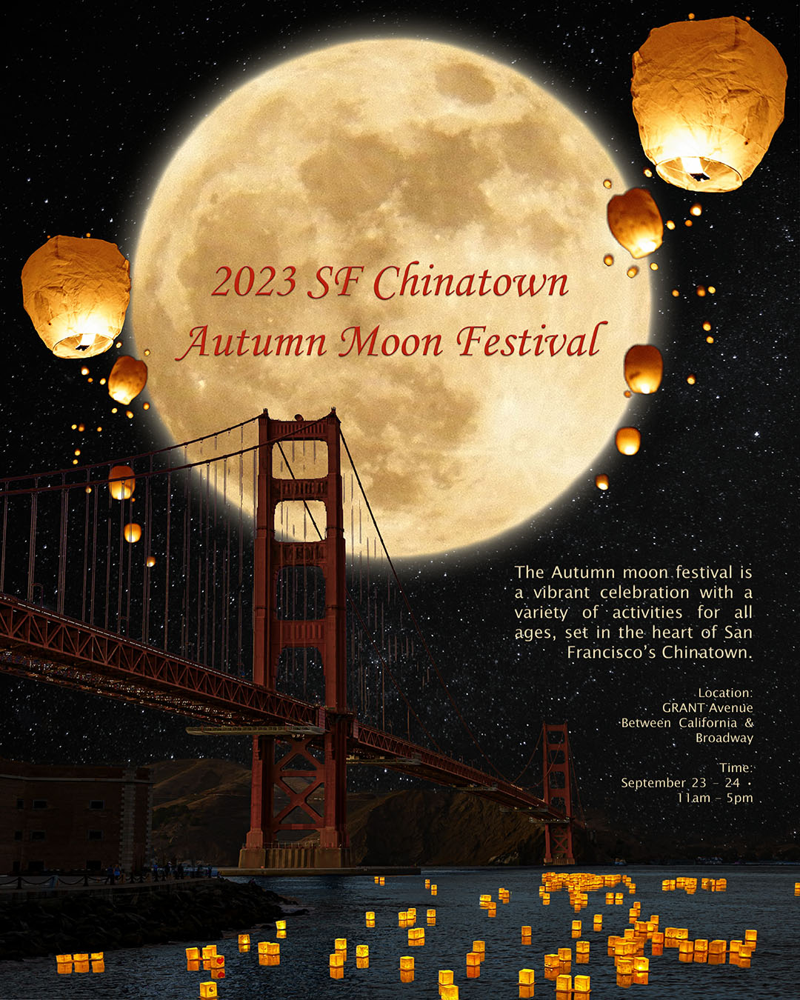
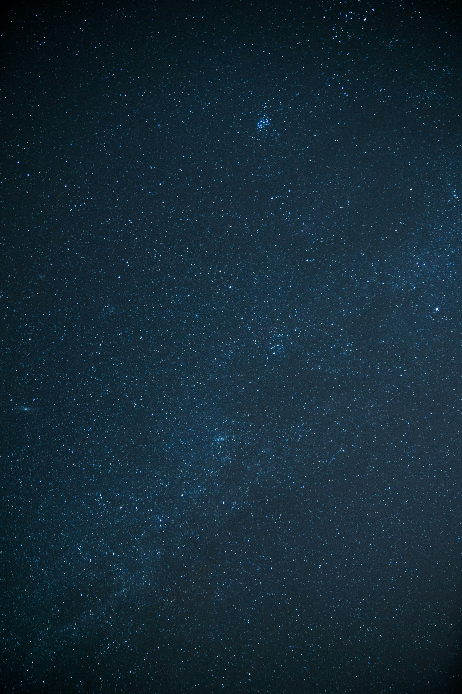
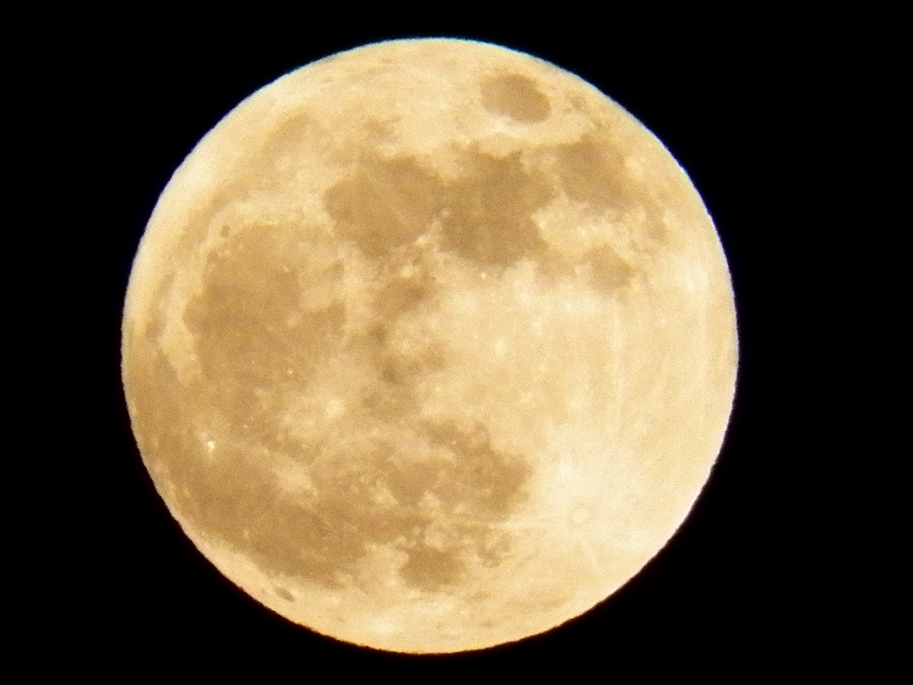
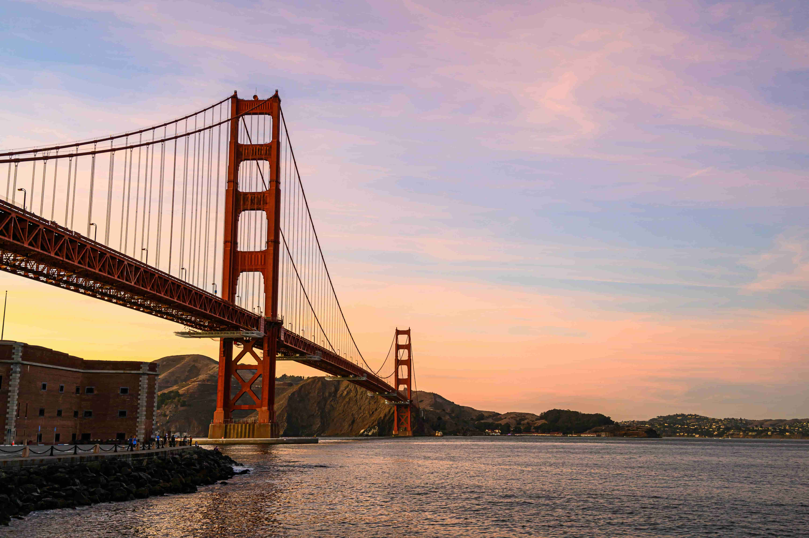
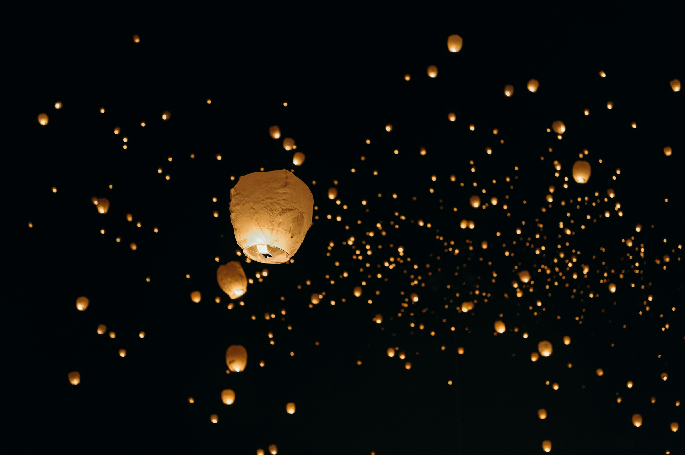
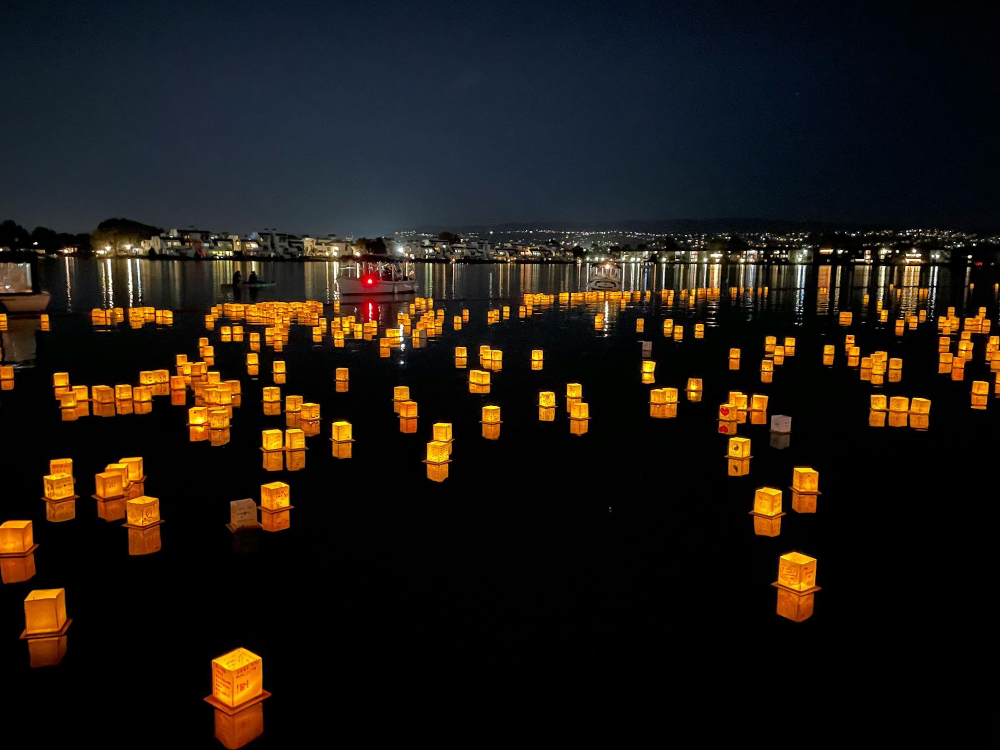

Moon Festival Poster
An event poster for the 2023 SF Chinatown Autumn Moon Festival — built by compositing five separate photographs into a single dramatic night scene using Adobe Photoshop.

About the Project
This poster was created for the 2023 SF Chinatown Autumn Moon Festival — a two-day public celebration held on Grant Avenue between California and Broadway in San Francisco's Chinatown (September 23–24, 11am–5pm).
The goal was to capture the warmth and magic of the Mid-Autumn Festival while grounding it in San Francisco's identity. Combining the iconic Golden Gate Bridge with sky lanterns, a luminous full moon, and the glow of floating lanterns on the water creates a scene that feels both culturally rooted and distinctly local.
Design Decisions
- Composition
- The moon is centered and oversized to command attention. The Golden Gate Bridge anchors the scene to SF, while the lanterns create movement and depth — sky lanterns above, water lanterns below — framing the moon between them.
- Typography
- An italic serif in deep red gives the title elegance and cultural warmth. Event details are set in a clean, right-aligned block — small enough to stay secondary to the image but legible against the dark sky.
- Color
- The palette is entirely drawn from the source photos: deep navy sky, warm golden moon, orange-red lanterns, and the bridge's rust tones. No extra colors were introduced — unity through restraint.
Source Materials
Five photographs were sourced and composited in Photoshop to build the final scene. The moon and sky lanterns were blended using Screen mode to drop the black background naturally, while the bridge was masked and color-graded to match the night setting.

Night Sky — base layer
Full Moon — Screen blend
Golden Gate Bridge — masked & color-graded
Sky Lanterns — Screen blend
Water Lanterns — foreground layerFinal Poster
Photo Credits
- Sky Lanterns — Leon Contreras via Unsplash
- Golden Gate Bridge — Brett Sayles via Pexels
- Full Moon — Junior Libby (CC0)
- Starry Night Sky — Guille Pozzi via Unsplash
- Water Lanterns — Isabella Smith via Unsplash